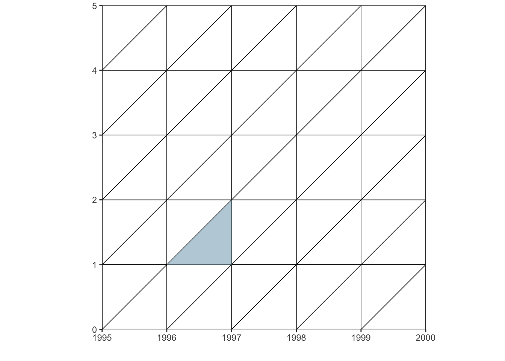

El paquete fue creado Philipp Ottolinger, este ejercicio es una versión en español (con algunos comentarios) de su ejemplo https://github.com/ottlngr/LexisPlotR
3.2.1 Dibujar una cuadrícula
Este paquete nos puede ayudar a hacer nuestras cuadrículas. Ponemos los años de inicio y de final; así como las edades de inicio y de final. Recuerda que un diagrama de Lexis debe tener una misma escala en los ejes.
# Dibuje una cuadrícula de Lexis desde el año 2010 hasta el año 2015, que representa las edades de 0 a 5 años.LexisPlotR::lexis_grid(year_start =2010, year_end =2015, age_start =0,age_end=5)
Aunque no necesariamente podemos dibujar sólo cuadrados
# Dibuje una cuadrícula de Lexis desde el año 2010 hasta el año 2015, que representa las edades de 0 a 7 años.lexis_grid(year_start =2010, year_end =2015, age_start =0, age_end =7)
Si no ponemos nada especifico en un argumento “d=”, asume que los deltas son de un año. Pero lo podemos modificar
No es tan sencillo, pero podemos dibujar un espacio “APC”, o varios.
polygons <-data.frame(group =c(1,1,1), # es un triángulox =c("1996-01-01", "1997-01-01", "1997-01-01"), # van en fechasy =c(1,1,2)) # van en edadesmi_diagrama %>%lexis_polygon(x = polygons$x,y = polygons$y, group = polygons$group)

checa que básicamente se trata de colocar los puntos que dibujan el polígono. Son tres puntos:
Fecha: “1996-01-01”, edad=1
Fecha: “1997-01-01”, edad=1
Fecha: “1997-01-01”, edad=2
Si queremos más triángulos, podemos agregarlos en el mismo objeto:
polygons <-data.frame(group =c(1,1,1, # es un triángulo2, 2,2), # es otro triángulox =c("1996-01-01", "1997-01-01", "1997-01-01", # van en fechas 1"1998-01-01", "1998-01-01", "1999-01-01"), # van en fechas 2y =c(1,1,2, # van en edades 13,4,4))# van en edades 2mi_diagrama %>%lexis_polygon( x = polygons$x,y = polygons$y, group = polygons$group)
Hacé un diagrama de Lexis decenal desde tu quinquenio de nacimiento hasta 2025, gráfica tu línea de vida y otros elementos o etapas importantes de tu vida